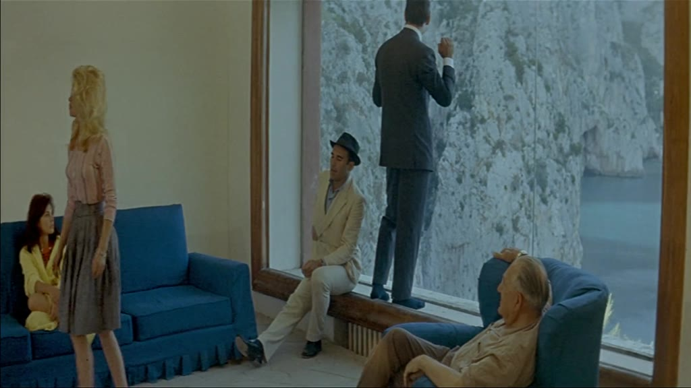

Image context
Search input:
In all of this the window serves as the prop for discovering new and unexpected relationships between the inside and outside.
Search mode: paragraph_v Targeting: 1.5×
Selected image

Region 0 — anteroom, incorporated, lounge, stair
All regions
Region 0 — ['courtyard', 'femininity', 'oleander', 'madame', 'rosebush'], ['landscape', 'stair', 'hideaway', 'jailbreak'], ['jailbreak', 'proprietor', 'clothed', 'courtyard'], ['handbag', 'clothed', 'madame', 'femininity'], ['anteroom', 'incorporated', 'lounge', 'stair'], ['enquiry', 'rosebush', 'anteroom'], ['incorporated', 'enquiry', 'proprietor'], ['hideaway', 'struck', 'compelled'], ['jailbreak', 'explicit', 'lounge', 'compelled'], ['counterattack', 'deflecting', 'explicit'], ['mattress', 'sheer', 'bedpost'], ['deflecting', 'bedpost', 'struck'], ['tapestry', 'lacquer'], ['lacquer', 'tapestry'], ['landscape', 'reconnaissance'], ['registrar', 'courtyard', 'refurbish'], ['oleander', 'dress', 'bedpost'], ['counterattack', 'deflecting', 'tearful'], ['hairstyle', 'bedpost', 'flatmate'], ['sheer', 'anteroom', 'bedpost']
- assets/film_frames_300/Kikis_Delivery_Service_-_Hayao_Miyazaki_(1989)__10d3ca6277__t00214.000__tc00-03-34.000__w300.jpg — ['courtyard', 'femininity', 'oleander', 'madame', 'rosebush']
- assets/film_frames_300/Taste_of_Cherry_-_Abbas_Kiarostami_(1997)__b872bcb7c9__t02399.000__tc00-39-59.000__w300.jpg — ['landscape', 'stair', 'hideaway', 'jailbreak']
- assets/film_frames_300/Talk_to_Her_(Hable_con_ella)_-_Pedro_Almodvar_(2002)__076eef2c62__t05580.000__tc01-33-00.000__w300.jpg — ['jailbreak', 'proprietor', 'clothed', 'courtyard']
- assets/film_frames_300/Taxi_Driver_-_Martin_Scorsese_(1976)__ce43087061__t00647.000__tc00-10-47.000__w300.jpg — ['handbag', 'clothed', 'madame', 'femininity']
- assets/film_frames_300/Contempt_-_Jean-Luc_Godard_(1963)__04dc8f934e__t05370.000__tc01-29-30.000__w300.jpg — ['anteroom', 'incorporated', 'lounge', 'stair']
- assets/film_frames_300/The_Wind_That_Shakes_the_Barley_-_Ken_Loach_(2006)__368c92e11a__t05395.000__tc01-29-55.000__w300.jpg — ['enquiry', 'rosebush', 'anteroom']
- assets/film_frames_300/Labyrinth_of_Passion_(Laberinto_de_pasiones)_-_Pedro_Almodvar_(1982)__f8ea58c81a__t03730.000__tc01-02-10.000__w300.jpg — ['incorporated', 'enquiry', 'proprietor']
- assets/film_frames_300/All_About_My_Mother_(Todo_sobre_mi_madre)_-_Pedro_Almodvar_(1999)__3c37a930a4__t01501.000__tc00-25-01.000__w300.jpg — ['hideaway', 'struck', 'compelled']
- assets/film_frames_300/Jackie_Brown_-_Quentin_Tarantino_(1997)__fcd91eefb2__t05550.000__tc01-32-30.000__w300.jpg — ['jailbreak', 'explicit', 'lounge', 'compelled']
- assets/film_frames_300/The_Wolf_of_Wall_Street_-_Martin_Scorsese_(2013)__76172b66e7__t06677.000__tc01-51-17.000__w300.jpg — ['counterattack', 'deflecting', 'explicit']
- assets/film_frames_300/The_Young_Pope_S01E01_-_Paolo_Sorrentino_(2016)__ca481301ea__t00300.000__tc00-05-00.000__w300.jpg — ['mattress', 'sheer', 'bedpost']
- assets/film_frames_300/Reservoir_Dogs_-_Quentin_Tarantino_(1992)__6b2fbc1161__t04150.000__tc01-09-10.000__w300.jpg — ['deflecting', 'bedpost', 'struck']
- assets/film_frames_300/Madadayo_-_Akira_Kurosawa_(1993)__433317a272__t03825.000__tc01-03-45.000__w300.jpg — ['tapestry', 'lacquer']
- assets/film_frames_300/Spirited_Away_-_Hayao_Miyazaki_(2001)__233a4c44d0__t05505.000__tc01-31-45.000__w300.jpg — ['lacquer', 'tapestry']
- assets/film_frames_300/Andrei_Rublev_-_Andrei_Tarkovsky_(1966)__dd4f0a4e28__t00530.000__tc00-08-50.000__w300.jpg — ['landscape', 'reconnaissance']
- assets/film_frames_300/Marie_Antoinette_-_Sofia_Coppola_(2006)__35717a1c3d__t02203.000__tc00-36-43.000__w300.jpg — ['registrar', 'courtyard', 'refurbish']
- assets/film_frames_300/The_Skin_I_Live_In_(La_piel_que_habito)_-_Pedro_Almodvar_(2011)__e9ae6a3740__t03326.000__tc00-55-26.000__w300.jpg — ['oleander', 'dress', 'bedpost']
- assets/film_frames_300/The_Graduate_-_Mike_Nichols_(1967)__0d84fdbb74__t04137.000__tc01-08-57.000__w300.jpg — ['counterattack', 'deflecting', 'tearful']
- assets/film_frames_300/Three_Billboards_Outside_Ebbing,_Missouri_-_Martin_McDonagh_(2017)__3f1ca987cc__t00306.000__tc00-05-06.000__w300.jpg — ['hairstyle', 'bedpost', 'flatmate']
- assets/film_frames_300/Notes_on_a_Scandal_-_Richard_Eyre_(2006)__7cc0470abc__t04177.000__tc01-09-37.000__w300.jpg — ['sheer', 'anteroom', 'bedpost']
Region 1 — ['peeking', 'infiltrating', 'enter', 'burglarized', 'eavesdrop', 'mirrored'], ['disguising', 'imprisonment', 'eavesdrop', 'mirrored', 'peeking', 'quartet'], ['imprisonment', 'renovating', 'finch', 'squalor'], ['mirrored', 'finch', 'squalor', 'burglarized'], ['sorrowful', 'mark', 'saddest', 'mirrored'], ['sorrowful', 'nightgown', 'saddest'], ['blindfold', 'texture', 'rubbing'], ['texture', 'obstacle', 'renovating'], ['eyesore', 'slum', 'enter'], ['quartet', 'mirrored', 'peeking', 'infiltrating'], ['transsexual', 'mirrored', 'burglarized', 'coven'], ['aligned', 'eyesore', 'mirrored'], ['nightgown', 'transsexual'], ['jellybean', 'mark'], ['spraying', 'aligned', 'mirrored'], ['syringe', 'casualty', 'burglarized'], ['blindfold', 'imprisonment', 'texture', 'obstacle'], ['texture', 'rubbing'], ['peeking', 'burglarized', 'barmaid'], ['squalor', 'barmaid']
- assets/film_frames_300/The_Florida_Project_-_Sean_Baker_(2017)__3805f8515d__t03479.000__tc00-57-59.000__w300.jpg — ['peeking', 'infiltrating', 'enter', 'burglarized', 'eavesdrop', 'mirrored']
- assets/film_frames_300/The_Marriage_of_Maria_Braun_-_Rainer_Werner_Fassbinder_(1979)__f0be7cedb8__t04310.000__tc01-11-50.000__w300.jpg — ['disguising', 'imprisonment', 'eavesdrop', 'mirrored', 'peeking', 'quartet']
- assets/film_frames_300/The_Marriage_of_Maria_Braun_-_Rainer_Werner_Fassbinder_(1979)__bcb20caa6e__t00520.000__tc00-08-40.000__w300.jpg — ['imprisonment', 'renovating', 'finch', 'squalor']
- assets/film_frames_300/Caught_Stealing_-_Darren_Aronofsky_(2025)__4d79eb5550__t01340.000__tc00-22-20.000__w300.jpg — ['mirrored', 'finch', 'squalor', 'burglarized']
- assets/film_frames_300/Django_Unchained_-_Quentin_Tarantino_(2012)__645abd6d8c__t03676.000__tc01-01-16.000__w300.jpg — ['sorrowful', 'mark', 'saddest', 'mirrored']
- assets/film_frames_300/Mulholland_Dr._-_David_Lynch_(2001)__90331200d6__t07200.000__tc02-00-00.000__w300.jpg — ['sorrowful', 'nightgown', 'saddest']
- assets/film_frames_300/Stntang_-_Bla_Tarr_(1994)__05c6742ca3__t04780.000__tc01-19-40.000__w300.jpg — ['blindfold', 'texture', 'rubbing']
- assets/film_frames_300/Taste_of_Cherry_-_Abbas_Kiarostami_(1997)__8b0a2adab5__t02663.000__tc00-44-23.000__w300.jpg — ['texture', 'obstacle', 'renovating']
- assets/film_frames_300/Parasite_-_Bong_Joon-ho_(2019)__158e0076c2__t00202.000__tc00-03-22.000__w300.jpg — ['eyesore', 'slum', 'enter']
- assets/film_frames_300/Underground_-_Emir_Kusturica_(1995)__393bd2124f__t02900.000__tc00-48-20.000__w300.jpg — ['quartet', 'mirrored', 'peeking', 'infiltrating']
- assets/film_frames_300/All_About_My_Mother_(Todo_sobre_mi_madre)_-_Pedro_Almodvar_(1999)__9586d26876__t01500.000__tc00-25-00.000__w300.jpg — ['transsexual', 'mirrored', 'burglarized', 'coven']
- assets/film_frames_300/Parasite_-_Bong_Joon-ho_(2019)__b082dad121__t00379.000__tc00-06-19.000__w300.jpg — ['aligned', 'eyesore', 'mirrored']
- assets/film_frames_300/Law_of_Desire_(La_ley_del_deseo)_-_Pedro_Almodvar_(1987)__7feb2b9257__t04367.000__tc01-12-47.000__w300.jpg — ['nightgown', 'transsexual']
- assets/film_frames_300/The_Killing_of_a_Sacred_Deer_-_Yorgos_Lanthimos_(2017)__75266fdc3c__t02987.000__tc00-49-47.000__w300.jpg — ['jellybean', 'mark']
- assets/film_frames_300/The_Cook,_the_Thief,_His_Wife_Her_Lover_-_Peter_Greenaway_(1989)__eeefc16334__t01720.000__tc00-28-40.000__w300.jpg — ['spraying', 'aligned', 'mirrored']
- assets/film_frames_300/Once_Upon_a_Time_in_Anatolia_-_Nuri_Bilge_Ceylan_(2011)__35070c426b__t08750.000__tc02-25-50.000__w300.jpg — ['syringe', 'casualty', 'burglarized']
- assets/film_frames_300/Taste_of_Cherry_-_Abbas_Kiarostami_(1997)__b60a7c7d16__t02632.000__tc00-43-52.000__w300.jpg — ['blindfold', 'imprisonment', 'texture', 'obstacle']
- assets/film_frames_300/Contempt_-_Jean-Luc_Godard_(1963)__7b8f11acea__t03910.000__tc01-05-10.000__w300.jpg — ['texture', 'rubbing']
- assets/film_frames_300/Kikis_Delivery_Service_-_Hayao_Miyazaki_(1989)__f920978b74__t05230.000__tc01-27-10.000__w300.jpg — ['peeking', 'burglarized', 'barmaid']
- assets/film_frames_300/Fight_Club_-_David_Fincher_(1999)__5d873d24d4__t03605.000__tc01-00-05.000__w300.jpg — ['squalor', 'barmaid']
Region 2 — ['speakerphone', 'domesticity', 'precinct', 'consulate', 'deacon'], ['wardrobe', 'domesticity', 'deacon', 'hallway'], ['consulate', 'precinct', 'broker', 'speakerphone'], ['elope', 'wardrobe', 'activate', 'snapshot'], ['invisibly', 'consulate', 'precinct', 'hallway'], ['magnesia', 'rhinoplasty'], ['radiator', 'invisibly', 'domesticity'], ['broker', 'magnesia'], ['rhinoplasty', 'handcuffed'], ['radiator', 'psychoanalysis', 'domesticity'], ['handcuffed', 'fingering'], ['heartbeat', 'domesticity', 'tea'], ['holster', 'plunger'], ['cry', 'domesticity', 'bawling'], ['bawling', 'cry'], ['consulate', 'bled', 'psychoanalysis', 'deacon'], ['sign', 'undersigned'], ['architect', 'squat'], ['intuitive', 'sign'], ['architect', 'ceiling']
- assets/film_frames_300/The_Wind_That_Shakes_the_Barley_-_Ken_Loach_(2006)__7dbe52e611__t05422.000__tc01-30-22.000__w300.jpg — ['speakerphone', 'domesticity', 'precinct', 'consulate', 'deacon']
- assets/film_frames_300/High_Heels_(Tacones_lejanos)_-_Pedro_Almodvar_(1991)__76d7af43a5__t00440.000__tc00-07-20.000__w300.jpg — ['wardrobe', 'domesticity', 'deacon', 'hallway']
- assets/film_frames_300/Labyrinth_of_Passion_(Laberinto_de_pasiones)_-_Pedro_Almodvar_(1982)__44aea9d09d__t01142.000__tc00-19-02.000__w300.jpg — ['consulate', 'precinct', 'broker', 'speakerphone']
- assets/film_frames_300/Live_Flesh_(Carne_trmula)_-_Pedro_Almodvar_(1997)__1e1dd872d2__t05250.000__tc01-27-30.000__w300.jpg — ['elope', 'wardrobe', 'activate', 'snapshot']
- assets/film_frames_300/No_Country_for_Old_Men_-_Joel_Ethan_Coen_(2007)__a203466d3d__t02450.000__tc00-40-50.000__w300.jpg — ['invisibly', 'consulate', 'precinct', 'hallway']
- assets/film_frames_300/Parthenope_-_Paolo_Sorrentino_(2023)__4c84443cfe__t01581.000__tc00-26-21.000__w300.jpg — ['magnesia', 'rhinoplasty']
- assets/film_frames_300/What_Have_I_Done_to_Deserve_This_-_Pedro_Almodvar_(1984)__a6712ddd05__t02600.000__tc00-43-20.000__w300.jpg — ['radiator', 'invisibly', 'domesticity']
- assets/film_frames_300/Jackie_Brown_-_Quentin_Tarantino_(1997)__fcd91eefb2__t05550.000__tc01-32-30.000__w300.jpg — ['broker', 'magnesia']
- assets/film_frames_300/28_Days_Later_-_Danny_Boyle_(2002)__25bebedfa4__t01310.000__tc00-21-50.000__w300.jpg — ['rhinoplasty', 'handcuffed']
- assets/film_frames_300/Mirror_(Zerkalo)_-_Andrei_Tarkovsky_(1975)__4d69e1b2a8__t02280.000__tc00-38-00.000__w300.jpg — ['radiator', 'psychoanalysis', 'domesticity']
- assets/film_frames_300/Kill_Bill_Vol._1_-_Quentin_Tarantino_(2003)__19feaad85d__t03310.000__tc00-55-10.000__w300.jpg — ['handcuffed', 'fingering']
- assets/film_frames_300/Babylon_-_Damien_Chazelle_(2022)__bf1d474361__t02797.000__tc00-46-37.000__w300.jpg — ['heartbeat', 'domesticity', 'tea']
- assets/film_frames_300/Dogville_-_Lars_von_Trier_(2003)__8739fbc319__t08804.000__tc02-26-44.000__w300.jpg — ['holster', 'plunger']
- assets/film_frames_300/Mulholland_Dr._-_David_Lynch_(2001)__2cbafe5a5c__t07210.000__tc02-00-10.000__w300.jpg — ['cry', 'domesticity', 'bawling']
- assets/film_frames_300/Talk_to_Her_(Hable_con_ella)_-_Pedro_Almodvar_(2002)__5e268cfe78__t03340.000__tc00-55-40.000__w300.jpg — ['bawling', 'cry']
- assets/film_frames_300/The_Conversation_-_Francis_Ford_Coppola_(1974)__9e9dbfd7d6__t05260.000__tc01-27-40.000__w300.jpg — ['consulate', 'bled', 'psychoanalysis', 'deacon']
- assets/film_frames_300/Whisper_of_the_Heart_-_Yoshifumi_Kond_(1995)__6e6dc2b924__t02750.000__tc00-45-50.000__w300.jpg — ['sign', 'undersigned']
- assets/film_frames_300/Three_Colours_Red_-_Krzysztof_Kielowski_(1994)__ce245fe8e0__t00255.000__tc00-04-15.000__w300.jpg — ['architect', 'squat']
- assets/film_frames_300/Parasite_-_Bong_Joon-ho_(2019)__08bd5bcd53__t07375.000__tc02-02-55.000__w300.jpg — ['intuitive', 'sign']
- assets/film_frames_300/Werckmeister_Harmonies_-_Bla_Tarr_gnes_Hranitzky_(2000)__17f1d87663__t07104.000__tc01-58-24.000__w300.jpg — ['architect', 'ceiling']